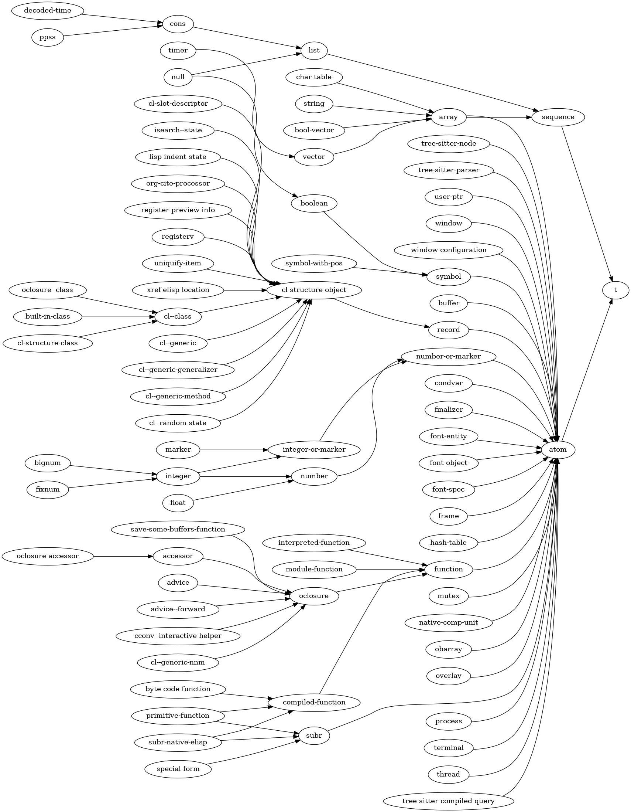

Lisp 对象类型按层次结构组织，这意味着类型可以从其他类型派生而来。派生自类型 A 的类型 B 的对象，会继承类型 A 的所有特性。这也表示：每个类型 B 的对象，同时也是它所派生自的类型 A 的对象。
所有类型都派生自类型 t。
用户可以通过 defclass 或 cl-defstruct 定义新类型。
原始类型的 Lisp 类型层次结构可表示如下：

例如，list列表 类型派生自 sequence序列 类型，而序列类型本身又派生自 t。